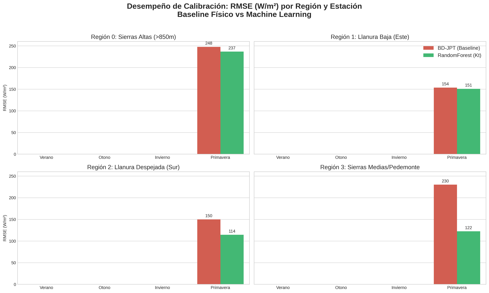

El siguiente es un borrador técnico detallado que resume todas las decisiones y mejoras implementadas en la Fase 4, listo para ser adaptado e incluido en tu Tercer Informe.
El enfoque inicial de la calibración satelital consistía en modelar directamente la Irradiancia Global Horizontal absoluta ($GHI$) en función de la reflectancia satelital. Sin embargo, este enfoque presentaba severas limitaciones debido a que la geometría solar (ángulo cenital estacional y diario) dominaba artificialmente la regresión, enmascarando la atenuación real producida por la nubosidad.
Para solucionar esto, se reformuló el problema al dominio del Índice de Claridad ($Kt$). Se calculó la curva teórica de cielo despejado ($GHI_{cs}$) utilizando el modelo de Ineichen-Perez (disponible en la librería pvlib) y se definió el objetivo de los modelos como $Kt = GHI_{observado} / GHI_{cs}$. Este cambio aisló matemáticamente la posición del sol, permitiendo que los algoritmos se concentren exclusivamente en modelar la transmisividad atmosférica.
Uno de los principales desafíos fue emparejar los datos de acumulación horaria de la red de superficie (Davis) con las capturas instantáneas del satélite GOES. Se implementaron dos correcciones fundamentales:
Para garantizar el rigor metodológico, no se descartó el modelo físico-estadístico original BD-JPT (ampliamente validado en la región, p. ej., en el Atlas Solar de Uruguay). Este modelo fue implementado e introducido dinámicamente en el bucle de validación cruzada como el Modelo de Control 0. Su función fue servir como el piso de rendimiento contra el cual los modelos no lineales de Machine Learning debían demostrar su superioridad.
La topografía de Córdoba presenta un gradiente marcado que induce regímenes de nubosidad y atenuación muy distintos (nubes orográficas en las Sierras vs. llanuras húmedas). Entrenar un único modelo global diluía estas diferencias físicas. Se utilizaron los resultados del clustering multivariado K-Means (desarrollado en la Fase 2) para segmentar la provincia en 4 Macro-Regiones (Sierras Altas, Llanura Este, Llanura Sur, y Pedemonte/Sierras Medias). El pipeline de entrenamiento se reestructuró para ejecutarse de forma independiente en cada ecosistema topográfico.
La dinámica atmosférica en Córdoba cambia radicalmente entre la época húmeda estival (dominada por tormentas convectivas de rápido desarrollo) y la época seca invernal (nubes estratiformes estables). Además, el albedo superficial de fondo ($B_0$) varía considerablemente. Para capturar esta física, se subdividió aún más el conjunto de entrenamiento, entrenando una matriz de 16 modelos independientes (4 Regiones $\times$ 4 Estaciones del año).
Todo el pipeline se evaluó utilizando una validación cruzada espacial estricta (GroupKFold agrupado por station_id), garantizando que las métricas reflejen el rendimiento ante estaciones completamente invisibles durante el entrenamiento.
Conclusiones Principales: * Limitaciones del Baseline: El modelo físico BD-JPT mostró un desempeño muy sólido en las llanuras estables (alcanzando un $R^2 \approx 0.79$), pero falló en modelar las atenuaciones complejas del pedemonte y las sierras. Forzar regresiones lineales planas sobre el $Kt$ generó resultados marginales. * Superioridad del Machine Learning: Los algoritmos basados en árboles, específicamente el Random Forest Regressor, lograron capturar exitosamente las no-linealidades de la atenuación de las nubes en el dominio $Kt$. En regiones óptimas (como el Pedemonte durante la Primavera y el Otoño), el Random Forest elevó el $R^2$ reconstruido de la Irradiancia Global a $\sim0.90$, reduciendo el Error Cuadrático Medio (RMSE) al umbral de los 100 W/m². * El Desafío Convectivo: La calibración estacional confirmó que el Verano sigue siendo el período de mayor error generalizado (RMSE $\sim 150$ W/m²) debido a la alta varianza sub-horaria de las tormentas convectivas, las cuales superan la resolución temporal de la instantánea satelital actual. No obstante, la especialización de los modelos mitigó este sesgo significativamente frente a la alternativa de un modelo anual promediado.
Para maximizar tanto la precisión predictiva como la interpretabilidad operacional, se implementó una arquitectura híbrida. El modelo híbrido conserva a BD-JPT como estimador físico de primer orden y utiliza Random Forest para modelar únicamente el residual sistemático en el dominio $Kt$. La predicción final se define como:
$$Kt_{hyb} = \text{clip}(Kt_{BDJPT} + \lambda\Delta Kt_{RF}, 0, 1.15)$$
En esta primera implementación se adoptó $\lambda=1$, equivalente a incorporar completamente el residual aprendido. La optimización de $\lambda$ se deja como análisis de sensibilidad posterior.
Esta arquitectura no reemplaza el modelo físico, sino que lo corrige de forma data-driven, manteniendo una descomposición interpretable entre la componente radiativa base y el residual asociado a nubosidad, topografía y efectos sub-grid.
La siguiente tabla presenta el Error Cuadrático Medio (RMSE) en W/m² comparando los enfoques en el Pedemonte (Región 3) a lo largo del año:
| Estación | Modelo Físico: BD-JPT | ML Directo: RF | Híbrido: BD-JPT + RF | Diferencia Híbrido vs RF |
|---|---|---|---|---|
| Verano | 248.0 | 139.3 | 142.0 | +2.7 |
| Otoño | 189.0 | 96.2 | 102.2 | +6.0 |
| Invierno | 172.6 | 98.0 | 104.8 | +6.8 |
| Primavera | 230.8 | 122.1 | 129.9 | +7.8 |
Nota: Se observa que el enfoque híbrido logra una corrección masiva sobre el modelo físico original, conservando la mayor parte de la capacidad predictiva del Random Forest (el híbrido es solo marginalmente inferior, sumando entre 2 y 8 W/m² de error) pero manteniendo intacto a BD-JPT como el núcleo físico interpretable de la predicción.
El siguiente gráfico ilustra la reducción de error lograda por el Machine Learning en contraposición al modelo físico tradicional:
